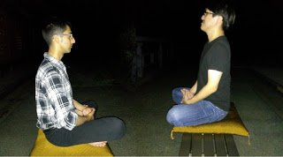
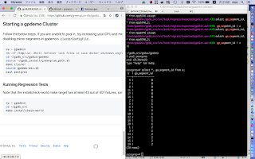
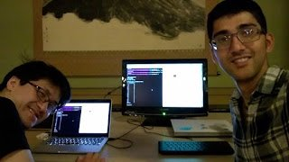
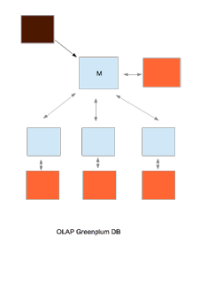
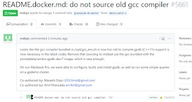

Zen Programming Workshop - Open Source Greenplum Database
今日は７年間もプログラミングやってる道場仁志（どうじょう・まさし）と２時間ぐらいの禅プログラミングワークショップやりました！福井駅辺りで合流して、風水のいい和食屋さんで晩ごはんを食べて元気になって、車で永平寺町の四季の森文化館に移動して、ワークショップを始まりました。
Today, I did a Zen programming workshop for about 2 hours with Masashi Dojo, a Japanese programmer with 7 years of experience! We met up at Fukui station, got pumped up after having dinner at a Japanese restaurant with nice Feng Shui, drove over to the Eiheiji Four Seasons Cultural Center, and started the workshop.
最初はWiFiのある１階のオフィスルームでGreenplumというなオープンソースのデータベースのコードをダウンロードして、Dockerでの環境をセットアップしました。ダウンロードする部が終わったら２階の傘松閣に上がりました。
At first, we used the WiFi in the first floor office room to download the open source Greenplum code and set up our Docker environment. After that, we went up to the 2nd floor Zen hall.

暑くて外で坐禅をしおとして、ベンチの上に座布団を敷いて大自然で１０分間ぐらい坐禅して、あみるが結構心が落ち着きましたけど、気配で道場が緊張してしまいました。
It was pretty hot, so we went outside to do Zazen meditation on benches/zabuton for about 10 minutes in the beautiful nature under a starry sky surrounded by greenery. Amil got quite calm afterwards, but Masashi got nervous from being on alert to his surroundings.

その後はワークショップを続いて、GreenplumのコードのConfigureとBuildとInstallをして、Demo Clusterを立ち上げられました。
After that, we configured, built, and installed the code after which we set up a demo cluster.


Greenplumの構成も少し説明して、簡単なSQL Queryを書きました。
I also explained the Greenplum architecture and we wrote some simple SQL queries.

GitHubにオープンソースのPRも作れました！
Finally, we put up an open source PR on GitHub!

最後にまた外で坐禅しに行きましたけど、動物が近くに感じて怖くて中に入って鍵をかけました！
At the end we went outside to do Zazen meditation again, but got scared from the noises of animals we felt around us, so ran inside and locked the doors!
道場さんの感想は外は怖くて、LinuxとviとGitHubの使い方をもう少し学べて良かったです。勉強できてありがたいです。
Masashi's impressions were first scared! and then thankful that he could study Linux, vi, and GitHub!